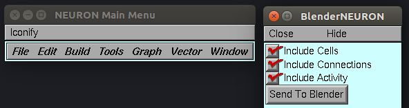

Installation¶
BlenderNEURON installation is a simple two part process which enables communication between NEURON and Blender.
For Part 1, you can choose either the HOC (NEURON default) or Python versions. Both have identical functionality (HOC version has a wrapper that allows loading the library by opening a .hoc file).
HOC GUI Installation¶
Install this part if you generally use NEURON HOC interface (NEURON default).
Part 1: HOC NEURON Client

- If you haven’t already, install NEURON
- Download the latest HOC version (e.g. blender_neuron_HOC_xxx.zip)
- Extract the zip file and open the BlenderNEURON.hoc file using NEURON. You should see the BlenderNEURON interface.
Python Library Installation (Optional)¶
Install this part if you generally use NEURON+Python interface. The library will work if you use the -python flag to launch NEURON or you have compiled NEURON Python module and can from neuron import h from Python console.
Part 1: Python NEURON Client
- If you haven’t already, install NEURON
- Using the same Python environment as NEURON, use the
pip install blenderneuroncommand to install the BlenderNEURON client library- Start NEURON+Python, and type
from blenderneuron.quick import bnto load the BlenderNEURON interface
Blender Addon Installation¶
Note
The steps below assume that the Blender-bundled instance of Python is being used in Blender. If you’ve modified Blender to use a different version of Python, you will need to manually Cythonize the addon.
- Part 2: Blender Addon Server
- If you haven’t already, install and open Blender (Note: Use version 2.79. Support for 2.8+ is under development)
- Download the BlenderNEURON addon (e.g. blender_neuron_addon_xxx.zip). Note: On MacOS, Safari browser may automatically extract the zip file, make sure you use the unextracted .zip file in the next step.
- In Blender, click File > User Preferences > Add-ons (tab) > Install Add-on From File > Point to the addon .zip file
- Tick the checkbox next to ‘Import-Export: NEURON Blender Interface’ to load the addon. Then click “Save User Settings”.
- If you see a NEURON tab on the left side of the screen, the addon has been loaded successfully.

Test NEURON-Blender Connectivity¶
Once you have the NEURON HOC/Python module and Blender Add-on activated, check whether NEURON can communicate with Blender with the following steps:
- From NEURON, at the bottom of the BlenderNEURON window, click “Test Connection” button
- If you have Blender running, with the add-on installed and loaded (checkbox checked), the connection status should say “Ready”. It means that NEURON can succesfully communicate with Blender.